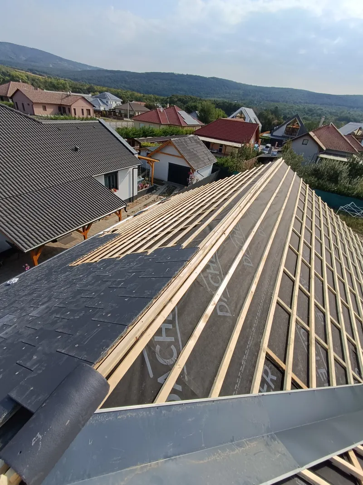

Minőség · Tapasztalat · BizalomBugyi és 200 km-es körzete · számlaképes, garanciával
Anyaggal és munkadíjjal együtt
 Cserepes lemez
Cserepes lemez Lemezfedés, vápa
Lemezfedés, vápa Bádogozás
Bádogozás
Léc és fóliaAz árak tájékoztató jellegűek. A végleges ár a tető állapotától, a választott anyagtól, a tető bonyolultságától és a munkaterülettől függ. Az esetleges többletmunka külön egyeztetést igényel. A képek saját munkáinkról készültek.